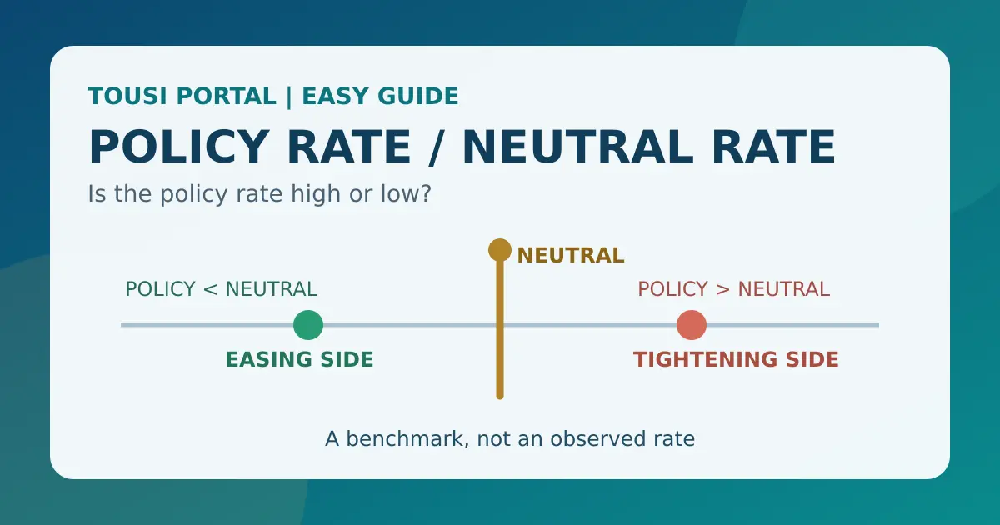

話題・トレンド ／ 金利の基礎
中立金利とは？政策金利は高いのか低いのか、何を基準に判断するの？初心者向けに解説

この記事で分かること
中立金利とは？
中立金利とは、経済を刺激も抑制もしない金利水準を考えるための概念です。景気を熱しすぎず、冷やしすぎない水準をイメージすると理解しやすいでしょう。
ただし、中立金利という公式の金利が毎日発表されているわけではありません。CPIや政策金利のように直接観測できる数字ではなく、経済成長率、インフレ、雇用、貯蓄と投資などのデータを使って推計される理論的・分析上の金利です。
重要：中央銀行が中立金利を自由に決定するわけでもありません。中央銀行は政策金利を設定・誘導し、その政策金利が経済に対して引き締め的か緩和的かを判断する材料の一つとして、中立金利を推計・参照します。
なぜ中立金利を知る必要があるの？
政策金利の数字だけを見ても、その金融政策が引き締め的なのか緩和的なのかは判断しにくいからです。金利の水準は、その時点の物価や成長力、資金需要などとの関係で意味が変わります。
| 政策金利 | 中立的と考えられる水準 | 相対的な見方 |
|---|---|---|
| 3％ | 2％ | 中立水準を上回るため、引き締め方向と考えるイメージ |
| 3％ | 4％ | 中立水準を下回るため、緩和方向と考えるイメージ |
これは概念を理解するための架空例です。実際の中央銀行の判断は、単純な「政策金利−中立金利」の引き算だけで決まるものではありません。実質金利、期待インフレ率、金融機関の貸出姿勢、為替、資産価格なども含めて総合的に評価されます。
政策金利と中立金利は何が違う？
政策金利は、中央銀行が金融政策として設定・誘導する実際の金利です。日本では日銀、米国ではFOMCの政策判断が注目されます。
| 項目 | 意味 | 位置づけ |
|---|---|---|
| 政策金利 | 中央銀行が金融政策として設定・誘導する金利 | 実際の政策運営に使われる金利 |
| 中立金利 | 景気を刺激も抑制もしないと考えられる金利水準 | 政策金利の作用を比較するための推計上の概念 |
政策金利の変更が預金、住宅ローン、企業の借入、長期金利などへ波及する仕組みは、政策金利とは？で詳しく整理しています。
政策金利が中立金利より高いとどうなる？
一般的な考え方では、政策金利が中立金利を上回ると、金融政策は景気や需要に対して引き締め的な方向に作用すると考えられます。
- 政策金利が上がる金融機関の資金調達や貸出金利に影響します。
- 借入コストが上がる住宅ローンや企業の設備資金などが借りにくくなる場合があります。
- 住宅・設備投資や消費に影響金利負担を考えて支出を先送りする動きが出る可能性があります。
- 需要に影響する企業活動や家計支出の強さが変化することがあります。
- 物価への波及需要の過熱を抑え、インフレ圧力を弱める方向に働く可能性があります。
ただし、この経路には時間差があります。政策金利が中立金利を上回った瞬間に景気が悪化するわけではなく、家計・企業の借入条件、海外経済、財政、金融市場の反応などによって効果は異なります。
政策金利が中立金利より低いとどうなる？
一般には、政策金利が中立金利を下回ると、金融政策が景気や需要を刺激する方向に作用すると考えられます。借入コストの低下を通じて、消費や企業投資を支える可能性があります。
もっとも、中立金利以下なら必ず景気が拡大し、中立金利以上なら必ず景気後退になるわけではありません。金利以外の要因が強い場合や、金融機関が融資に慎重な場合には、政策金利の変化が経済全体へ伝わりにくいこともあります。
実質中立金利とは？
実質金利は、名目金利から物価上昇の影響を差し引いて考える金利です。中立金利のうち、物価上昇率を含めない実質ベースの水準を実質中立金利と呼ぶことがあります。
自然利子率やr*（アールスター）は、景気や物価に対して中立的な実質金利を説明する文脈で使われます。日本銀行は自然利子率を「経済・物価に対して中立的な実質金利の水準」と説明しています。FRB・ニューヨーク連銀の資料では、r-starを経済が十分な力を発揮し、インフレが安定しているときに見込まれる実質短期金利として説明しています。
ただし、自然利子率・実質中立金利・r*は、資料や分析モデルによって定義の範囲や使われ方が少し異なることがあります。実務上近い意味で使われる場面はあっても、常に完全な同義語だと断定しないことが大切です。
実質金利の計算イメージや名目金利との違いは、実質金利とは？で確認できます。
名目中立金利と実質中立金利は何が違う？
実質中立金利は物価上昇の影響を除いた水準、名目中立金利は実際に表示される金利に近い名目ベースの水準です。概念的には、次のように考えます。
名目中立金利 ≒ 実質中立金利 ＋ 期待インフレ率
例えば、実質中立金利が1％、期待インフレ率が2％なら、名目中立金利は約3％というイメージです。ただし、実際の推計や政策判断を単純な足し算だけで説明できるわけではありません。
ここで重要なのは、実際に過去の物価指数で測った実績インフレ率と、将来の物価上昇についての期待インフレ率は別物だという点です。期待インフレ率は、期待インフレ率とは？で詳しく扱っています。
中立金利は直接見ることができない
中立金利は、CPIや政策金利のように「今日の中立金利は○％」と直接観測できる指標ではありません。経済が中立的な状態にあったとしても、その状態を実験のように取り出して測ることはできないからです。
推計では、例えば次のような情報が使われます。
- 経済成長や潜在成長率
- インフレ率と期待インフレ率
- 雇用や失業率
- 貯蓄と投資のバランス
- 人口動態
- 生産性
- 金融環境や市場金利
このため、観測された金利だけを見れば中立金利が分かるというものではありません。モデルが経済のどの部分を重視するか、データをどの期間で見るか、短期的なショックをどう扱うかによって結果が変わります。
なぜ中立金利の推計には幅があるの？
中立金利の推計には、異なるモデルや分析方法が使われます。例えば、GDP、インフレ、政策金利などから潜在成長率や自然利子率を推計するモデルもあれば、金融市場や構造モデルを重視する分析もあります。
そのため金融ニュースでは、「中立金利は○％程度」「中立金利のレンジ」「中立金利の推計値」といった表現が使われます。一つの数字を絶対的な正解として扱わず、誰が、いつ、どの方法で推計した数字なのかを確認することが重要です。
読み方のコツ：推計値が変わったことは、経済の状態そのものが急に変わったことと同じではありません。データの改定やモデルの変更によって数字が変わる場合もあります。
r*（アールスター）とは？
金融ニュースで出てくるr*は、一般に自然利子率・実質中立金利に関連する記号です。FRBの説明では、r*は経済が潜在力に見合う水準で活動し、物価が安定する場合の実質金利を表す考え方として扱われます。
ただし、r*が3％だから政策金利が必ず3％になる、という意味ではありません。名目政策金利を考えるには期待インフレ率が関係し、実際の政策判断には雇用、物価、金融環境、海外情勢なども入ります。また短期のr*と長期のr*を区別する分析もあります。
中立金利はずっと同じなの？
中立金利は固定された数字ではなく、経済構造の変化によって時間とともに変わり得ます。影響する可能性がある要因には、次のようなものがあります。
- 生産性や技術進歩
- 潜在成長率
- 人口動態や高齢化
- 家計・企業の貯蓄
- 投資需要
- 政府の財政
- 世界的な資金需要や国際的な資本移動
ただし、これらの要因が必ず一定方向へ中立金利を動かすと断定することはできません。例えば生産性向上は投資需要を押し上げる一方、将来の供給力を高める可能性もあり、影響の向きや大きさは経済状況によって変わります。
AI・設備投資で中立金利が変わることはある？
AI、データセンター、半導体などへの大規模な設備投資が続くと、企業の投資需要や将来の生産性、潜在成長率についての見方が変化する可能性があります。その結果、中立金利の推計をめぐる議論に影響することは考えられます。
一方で、AI投資が増えれば中立金利が必ず上がると決まっているわけではありません。投資が実際の生産性に結びつくか、資金調達がどの程度必要か、人口・貯蓄・世界の資金需要がどう変化するかなど、多くの条件を確認する必要があります。
このテーマで中央銀行当局者の最新発言を読むときは、発言者の見解と中央銀行の公式推計を区別し、講演資料や公式レポートの原文を確認しましょう。
中立金利と期待インフレ率の関係
実質中立金利から名目の中立的な金利水準を考えるとき、期待インフレ率が重要になります。実質中立金利が変わらなくても、将来の物価上昇への期待が変化すれば、名目で見た中立的な金利水準も変わる可能性があります。
例えば実質中立金利1％に対して、期待インフレ率が1％なら名目の中立的な水準は約2％、期待インフレ率が3％なら約4％というイメージです。これは概念説明のための単純化した例です。
実際のインフレ率と期待インフレ率の違い、CPIやPCEとの関係は、物価指標の違いと関係、CPIとは？、PCEデフレーターとは？で確認できます。
中立金利とFOMC・ドットチャートの関係
FOMCの経済見通しにある「長期的な政策金利見通し」は、中立的な金利水準を考える材料として市場で注目されることがあります。ドットチャートには、FOMC参加者それぞれの政策金利見通しが示されます。
しかし、ドットチャートの長期見通し＝中立金利の正確な公式値ではありません。長期見通しは、各参加者が適切と考える政策金利の水準であり、中立金利そのものを直接観測しているわけではありません。参加者の見通しにも幅があります。
中立金利と長期金利は何が違う？
長期金利は、国債市場などで形成される市場金利です。一方、中立金利は、経済を刺激も抑制もしない金利を考えるための概念です。両者は関連することがありますが、同じものではありません。
長期金利は、将来の政策金利予想、期待インフレ、国債需給、タームプレミアム、景気見通しなどによって動きます。したがって、中立金利の推計が変わらなくても長期金利は変動しますし、中立金利の推計が変化しても長期金利が同じ方向に動くとは限りません。
国債価格と利回りの逆方向の関係は、国債価格・利回り・長期金利の関係、金利の全体像は金利の種類と関係で確認できます。
中立金利が上昇すると何が変わる？
仮に中立金利が以前より高くなったと考えられる場合、同じ政策金利でも金融政策の引き締め度合いが以前とは異なる可能性があります。
| 時点 | 政策金利 | 中立的水準 | 考え方 |
|---|---|---|---|
| 以前 | 3％ | 2％ | 中立水準を上回り、引き締め的と考えられる |
| その後 | 3％ | 3％ | 同じ政策金利でも中立に近づいたと考えられる |
このような見方が、「高金利が以前より長く続く可能性」や「政策金利をどこまで下げれば中立的なのか」といった市場議論につながります。ただし、これも推計に基づく議論であり、将来の政策を確定させるものではありません。
中立金利と株価の関係
中立金利そのものが株価を直接決めるわけではありません。ただし、中立金利に対する市場の見方が変わることで、将来の政策金利や割引率への見方が修正され、株式の評価に影響する場合があります。
中立金利の推計上昇 → 将来の政策金利も高いとの予想 → 国債利回り・割引率への見方 → 株式のバリュエーション
一方、中立金利の上昇が生産性や企業利益の改善期待と同時に起きるなら、株価への影響は金利だけでは決まりません。中立金利上昇＝必ず株安とはいえず、企業利益、景気、投資家心理、株価の織り込みなどを合わせて考える必要があります。株価が動く基本的な仕組みは株価はなぜ上下するのか？も参考にしてください。
中立金利と国債・長期金利の関係
中立金利についての市場の見方が変わると、将来の政策金利予想が修正され、国債利回りへ影響する場合があります。しかし、国債利回りは国債需給、インフレ期待、タームプレミアム、海外金利、リスク回避姿勢などでも変動します。
国債の発行や国債入札の結果、イールドカーブの形状を読むときも、中立金利だけで理由を決めつけないことが大切です。ニュースでは「政策予想」「物価期待」「需給」「景気見通し」を分けて確認します。
中立金利とドル円・為替の関係
中立金利そのものが直接為替を決めるわけではありません。例えば米国の中立金利についての見方が変わると、次のような経路で為替に影響する可能性があります。
米国の中立金利への見方 → 将来の米政策金利予想 → 米国債利回り → 日米金利差への見方 → 為替
ただし、日本側の金融政策や金利、景気、貿易、リスク選好、実際の資金フローも為替を動かします。したがって、米国の中立金利上昇＝必ずドル高・円安とはいえません。
中立金利のニュースを見るときのポイント
「中立金利○％」という見出しを見たら、次の項目を確認しましょう。
- 名目中立金利なのか、実質中立金利なのか
- 誰・どの機関による推計なのか
- 一つの数字なのか、レンジなのか
- 推計方法やモデルは何か
- 以前の推計から変化したのか
- 期待インフレ率はどうなっているか
- 現在の政策金利との差はどの程度か
- 中央銀行は金融政策をどう評価しているか
- 市場の政策金利予想はどう変化したか
結論：中立金利は確定した相場予想ではありません。推計値だけで株価・債券・為替の方向を断定せず、前提と他の経済データを一緒に読みます。
現在の中立金利は何％？
中立金利には、直接観測できる唯一の正解がありません。ここでは、2026年10月5日時点で確認できる公式資料の代表例を、推計・見通しとして紹介します。
| 資料 | 内容 | 読み方 |
|---|---|---|
| 日本銀行・2026年3月レビュー | 自然利子率を経済・物価に中立的な実質金利と説明。複数モデルで再推計し、推計値には相当なばらつきがあるとしています。 | 日本の自然利子率・金融緩和度合いを考える公式分析。単一の確定値ではありません。 |
| 日本銀行・2026年9月10日講演 | 自然利子率を−0.9〜＋0.5％、2％の物価目標を加えた名目ベースの中立金利を1.1〜2.5％と説明しています。 | 2026年3月公表の推計をもとにした講演での説明。推計レンジであり、将来も固定される数字ではありません。 |
| ニューヨーク連銀・r-star | Laubach-Williams、Holston-Laubach-Williamsなどのモデルによる米国等のr*推計を掲載。2026年8月27日時点のデータが案内されています。 | モデル推計値であり、ニューヨーク連銀やFOMCの公式予測そのものではありません。 |
| FRB・2026年9月SEP | FOMC参加者の長期的な適切な政策金利の中央値は3.2％、レンジは2.9〜3.9％でした。 | 参加者の長期政策金利見通しであり、中立金利を直接観測した公式値ではありません。 |
上表は、資料の定義・時点・推計主体を区別するための整理です。推計値はデータ改定やモデル変更で変わることがあるため、更新時には公式ページを再確認してください。
FAQ
中立金利とは何ですか？
景気を刺激も抑制もしない金利水準を考えるための概念です。直接観測できる公式の金利ではなく、経済データやモデルから推計されます。
中立金利と政策金利は何が違いますか？
政策金利は中央銀行が設定・誘導する実際の金利、中立金利は政策金利の作用を比較するための推計上の概念です。
中立金利は誰が決めるのですか？
誰かが公式に決定するものではありません。中央銀行や研究機関などが、経済データとモデルを使って推計します。
中立金利は何％ですか？
国・時点・推計方法で異なり、レンジで示されることがあります。唯一の正解はありません。
r*とは何ですか？
一般に自然利子率・実質中立金利に関連する記号です。潜在的な力を発揮する経済で、物価が安定する場合の実質短期金利を表す文脈で使われます。
実質中立金利と名目中立金利は何が違いますか？
実質中立金利は物価上昇の影響を除いた水準、名目中立金利は期待インフレ率を含む水準です。
政策金利が中立金利より高いとどうなりますか？
一般には引き締め方向に作用すると考えられますが、時間差があり、景気後退が必ず起きるわけではありません。
中立金利は時間とともに変化しますか？
生産性、潜在成長率、人口動態、貯蓄、投資需要、財政などの変化で変わり得ます。
ドットチャートの長期金利見通しは中立金利ですか？
同じものではありません。参加者の長期的な政策金利見通しであり、中立金利を直接観測した公式値ではありません。
中立金利が上がると株価は下がりますか？
必ず下がるわけではありません。将来の政策金利や割引率、企業利益、景気見通しなどを通じて影響する可能性があります。
まとめ
- 中立金利は、景気を刺激も抑制もしない金利を考えるための概念
- 政策金利とは異なり、直接設定される実際の金利ではない
- 中立金利は直接観測できず、モデルなどを使って推計される
- 推計方法や前提が異なるため、推計値には幅がある
- 実質中立金利はr*・自然利子率と関連する重要概念
- 名目の中立的な金利を考える際には期待インフレ率も重要
- 政策金利が中立金利より高ければ一般に引き締め方向、低ければ緩和方向と考えられる
- 中立金利自体も経済構造によって変化し得る
- ドットチャートや長期金利とは同じものではない
- 中立金利の推計だけで株価・為替の方向を断定することはできない
関連記事・関連教材
政策金利と中立金利の位置関係を初心者向けに整理します。
政策金利・長期金利・実質金利・イールドカーブを整理します。
CPI・PPI・PCE・期待インフレの役割を確認できます。
国債価格と利回りが逆に動く理由を整理します。
米国の金融政策を決める会合の基本を解説します。
一般ユーザー目線の体験でおすすめの会社をご紹介
ご利用にあたっての注意事項
本記事は情報提供を目的としており、投資の勧誘を目的としたものではありません。株式・投資信託・外国証券等の取引は元本保証がなく、相場変動等により損失が生じる場合があります。取引開始前に、契約締結前交付書面や商品説明書、目論見書等を必ずご確認のうえ、ご自身の判断と責任でお取引ください。